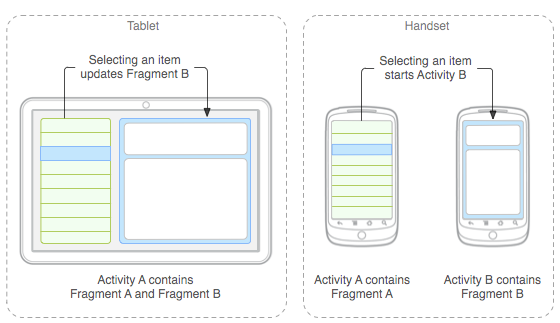
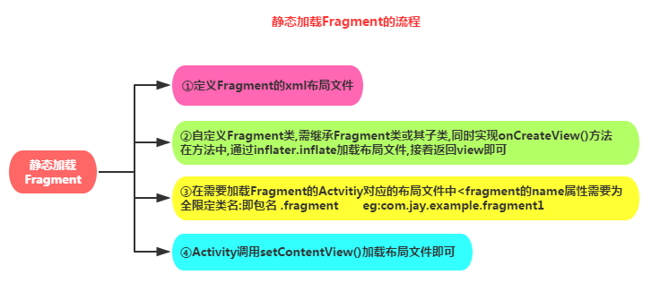
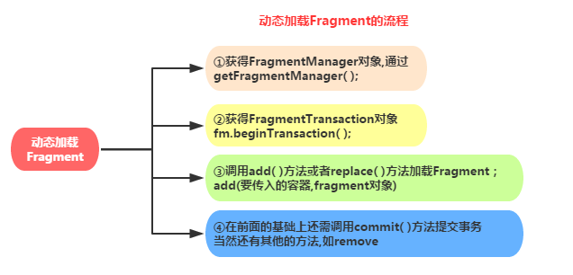
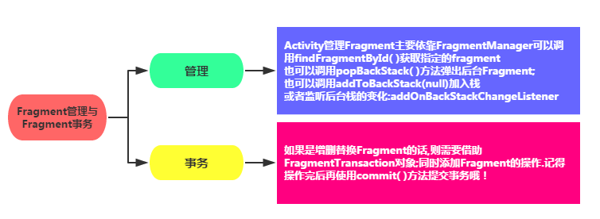

本節の導入
では、前の章では、Androidの四大コンポーネントであるActivity、Service、BroadCastReceiver、ContentProviderと、それらの間のつなぎ役であるIntentを一通りやりました。本章ではFragment（断片）というものを紹介します。本節ではこのFragmentの基本的な概念と使い方を説明します！公式ドキュメント：Fragment
1.基本概念
1）それは一体何者で、何に使うのか？
答え：FragmentはAndroid 3.0で導入された新しいAPIです。登場した本来の目的は、大画面のタブレットに適応するためでした。もちろん今でもタブレットアプリのUIデザインの寵児であり、私たちの一般的なスマホ開発でもこのFragmentを取り入れます。Fragmentは小さなActivityと見なすことができ、Activityの断片とも呼ばれます。考えてみてください。もし非常に大きな画面なのにレイアウトが1つしかなければ、画面を作るのはどれほど面倒でしょうか。しかもコンポーネントが多いと管理もとても大変です。Fragmentを使用すれば、画面をいくつかのブロックに分割し、グループ化して、モジュール単位の管理を行うことができます。これにより、実行中により簡単にActivityのユーザーインターフェースを動的に更新できます。また、Fragmentは単独では使用できず、Activityにネストして使用する必要があります。独自のライフサイクルを持っていますが、ホストActivityのライフサイクルの影響を受けます。例えば、Activityがdestoryされて破棄されれば、Fragmentも一緒に破棄されます。
下図は、公式ドキュメントで示されている、Fragmentがスマートフォンとタブレットのそれぞれ異なる状況に対応する処理の図です：

PS：シンプルなニュース閲覧ページです。2つのFragmentを使用して、ニュースリストとニュース内容をそれぞれ表示します；
2）Fragmentのライフサイクル図

3）核心ポイント：
以下に、Fragmentを使用する際のポイントを説明します：
- 3.0バージョン以降に導入された、つまりminSdkが11より大きい必要があります。
- FragmentはActivityにネストして使用する必要があります。もちろん別のFragmentにネストすることもできますが、そのネストされたFragmentもActivityにネストされている必要があります。間接的に言えば、FragmentはやはりActivityにネストする必要があるのです！！ホストActivityのライフサイクルの影響を受けますが、もちろんFragment自身にもライフサイクルがあります。また、Fragmentの中にFragmentをネストすることはお勧めしません。ネストされたFragmentのライフサイクルは制御できないからです！！！
- 公式ドキュメントによると、Fragmentを作成する際には少なくとも3つのメソッドを実装する必要があります：onCreate()、onCreateView()、OnPause()。ただ、onCreateViewだけ書いても大丈夫なようです...
- FragmentのライフサイクルはActivityと少し似ています：3つの状態があります：
Resumed：実行中のFragmentが表示されている
Paused：所属するActivityは表示されているが、フォーカスを取得できない
Stoped： ①addToBackStack()を呼び出すと、FragmentがBcakスタックに追加される ②そのActivityがバックグラウンドに移行するか、またはそのFragmentが置き換え/削除される
ps：停止状態のFragmentはまだ生きています（すべての状態とメンバー情報はシステムによって保持されています）。しかし、ユーザーにはもう見えません。そしてActivityが破棄されれば、Fragmentも一緒に破棄されます。
4）Fragmentのいくつかのサブクラス：
ps：多くの場合、私たちは直接Fragmentをオーバーライドし、inflateでレイアウトをロードして対応する処理を行います。サブクラスはあまり使いません。必要になったときにさらに詳しく研究しましょう！
- ダイアログ：DialogFragment
- リスト：ListFragment
- オプション設定：PreferenceFragment
- WebView画面：WebViewFragment
5）AppパッケージのFragmentを使うのか、それともv4パッケージのFragmentを使うのか：
問題の概要：
多くの方はFragmentを使用する際に、次のような状況に遭遇したことがあるでしょう：

では、いったいandroid.appパッケージのFragmentを使うべきなのか、それともandroid.support.v4.appパッケージのFragmentを使うべきなのでしょうか？
答え：実はどちらでも構いません。前述のとおり、FragmentはAndroid 3.0（API 11）以降に導入されました。では、開発するアプリが3.0未満のバージョンで動作する必要がある場合はどうでしょうか？例えば、まだわずかなシェアを持つ2.3のようなものです！そこで、v4パッケージが登場し、最低でも1.6バージョンまで互換性があります。どちらのパッケージを使うかはあなたのニーズ次第です。今や3.0未満のスマホのシェアはもう多くありません。街中は4.0以上ばかりで、6.0も10月にリリースされましたからね... ですから、この場合はappパッケージのFragmentを直接使い、関連するメソッドを呼び出しても、通常は何も問題ありません。Fragmentにappパッケージを使ったなら、FragmentManagerとFragmentTransactionもappパッケージのものでなければなりません！すべてappパッケージにするか、すべてv4パッケージにするかのどちらかです。そうしないとエラーになりますよ！もちろん、自分のアプリを低バージョンのスマホにも対応させたいのであれば、v4パッケージを選べばよいでしょう！
v4パッケージのFragmentを使用する際に注意すべき点：
- ①v4パッケージのFragmentを使用する場合、そのFragmentが属するActivityはFragmentActivityを継承する必要があります！事例：今日、xmlファイルで静的にFragmentをロードし、Fragmentをオーバーライドしましたが、Activityをロードする際にエラーになりました。だいたいFragmentのエラーか見つからないという内容で、name属性を何度か変更してもエラーのままでした。最終的にv4パッケージを使っていたことが原因だと分かり、自分のActivityをFragmentActivityに変更するだけで解決しました！
- ②以前、次のコードを書いたらエラーになりました：
ちょっと不可解ですね。Fragment、FragmentManager、FragmentTransactionはすべてv4パッケージを使っているし、ActivityもFragmentActivityを継承しているのに？すべてappパッケージに変えれば動きますが、それはv4パッケージを使う前提と矛盾するのでは？実は解決方法もあるんですよ？
答え：ただ、getFragmentManager( )をgetSupportFragmentManager( )に変更すればそれでOKです
2.Fragmentを作成する
1）静的にFragmentをロードする
実装の流れ：

サンプルコード：
Step 1:Fragmentのレイアウトを定義します。つまりFragmentが表示する内容です。
Step 2:Fragmentクラスを自作します。Fragmentまたはそのサブクラスを継承し、onCreateView()メソッドをオーバーライドする必要があります。そのメソッド内でinflater.inflate()メソッドを呼び出してFragmentのレイアウトファイルをロードし、その後、ロードしたviewオブジェクトを返します。
public class Fragmentone extends Fragment {
@Override
public View onCreateView(LayoutInflater inflater, ViewGroup container,
Bundle savedInstanceState) {
View view = inflater.inflate(R.layout.fragment1, container,false);
return view;
}
}
Step 3:FragmentをロードするActivityに対応するレイアウトファイルにfragmentタグを追加します。name属性は完全修飾クラス名であることを忘れないでください。つまり、Fragmentのパッケージ名を含める必要があります。例：
<fragment
android:id="@+id/fragment1"
android:name="com.jay.example.fragmentdemo.Fragmentone"
android:layout_width="match_parent"
android:layout_height="0dp"
android:layout_weight="1" />
Step 4:ActivityのonCreate()メソッド内でsetContentView()を呼び出してレイアウトファイルをロードするだけです！
2）動的にFragmentをロードする
実装の流れ：

サンプルコード：ここでは、縦横の画面切り替え時にFragmentを切り替えるデモを示します：

Fragmentとレイアウトのコードは掲載しないので、MainActivityの重要なコードを直接掲載します：
public class MainActivity extends Activity {
@Override
protected void onCreate(Bundle savedInstanceState) {
super.onCreate(savedInstanceState);
setContentView(R.layout.activity_main);
Display dis = getWindowManager().getDefaultDisplay();
if(dis.getWidth() > dis.getHeight())
{
Fragment1 f1 = new Fragment1();
getFragmentManager().beginTransaction().replace(R.id.LinearLayout1, f1).commit();
}
else
{
Fragment2 f2 = new Fragment2();
getFragmentManager().beginTransaction().replace(R.id.LinearLayout1, f2).commit();
}
}
}
3.Fragment管理とFragmentトランザクション

4.FragmentとActivityの連携

図を見るのが好きではない方もいるかもしれないので、次にテキストで紹介します：
1）コンポーネントの取得
FragmentがActivity内のコンポーネントを取得する：getActivity().findViewById(R.id.list)；
ActivityがFragment内のコンポーネントを取得する（idとtagのどちらでも可能）：getFragmentManager.findFragmentByid(R.id.fragment1);
2）データの受け渡し
①ActivityがFragmentにデータを渡す：
ActivityでBundleデータパケットを作成し、FragmentインスタンスのsetArguments(bundle)を呼び出してBundleデータパケットをFragmentに渡します。その後、Fragment内でgetArgumentsを呼び出してBundleオブジェクトを取得し、解析すればよいです。
②FragmentからActivityへのデータ渡し
Fragment内に内部コールバックインターフェースを定義し、そのFragmentを含むActivityにそのコールバックインターフェースを実装させます。そうすればFragmentはコールバックインターフェースを通じてデータを渡せます。コールバックとは何か、多くの人は知っていると思いますが、書けないんですよね。ネットで「fragment传数据给Activity」と検索すると、李刚先生のあのコードばかり出てきて、本当に困ります。まあ、ここでは部分的なコードを書いておきますので、読者は見ればすぐ分かるでしょう。
Step 1: コールバックインターフェースを定義する（Fragment内）
/*接口*/
public interface CallBack{
/*定义一个获取信息的方法*/
public void getResult(String result);
}
Step 2: インターフェースコールバック（Fragment内）
/*接口回调*/
public void getData(CallBack callBack){
/*获取文本框的信息,当然你也可以传其他类型的参数,看需求咯*/
String msg = editText.getText().toString();
callBack.getResult(msg);
}
Step 3: インターフェースコールバックメソッドを使ってデータを読み取る（Activity内）
/* 使用接口回调的方法获取数据 */
leftFragment.getData(new CallBack() {
@Override
public void getResult(String result) { /*打印信息*/
Toast.makeText(MainActivity.this, "-->>" + result, 1).show();
}
});
方法をまとめます：
->Fragmentにインターフェースを定義し、インターフェース内に抽象メソッドを定義します。渡したいデータパラメータの型をその型に設定します。
->次に、インターフェース内の抽象メソッドを呼び出すメソッドも書き、渡したいデータをそこに渡します。
->さらに次はActivityです。Fragmentが提供するそのメソッドを呼び出し、抽象メソッドをオーバーライドする際にデータを読み取ればOKです!!!
③FragmentとFragmentの間のデータ相互受け渡し
実はこれは簡単で、データを受け取るFragmentオブジェクトを見つけて、直接setArgumentsを呼び出してデータを渡せばいいのです。通常はreplace時、つまりFragment遷移時にデータを渡します。その場合、遷移先のFragmentを初期化した後に、そのsetArgumentsメソッドを呼び出してデータを渡すだけでOKです!
2つのFragmentが遷移ではなく即時にデータを渡す必要がある場合は、まずActivityでf1から渡されたデータを取得し、それをf2に渡す必要があります。つまりActivityを媒介にするということです。
サンプルコードは次のとおりです：
FragmentManager fManager = getSupportFragmentManager( );
FragmentTransaction fTransaction = fManager.beginTransaction();
Fragmentthree t1 = new Fragmentthree();
Fragmenttwo t2 = new Fragmenttwo();
Bundle bundle = new Bundle();
bundle.putString("key",id);
t2.setArguments(bundle);
fTransaction.add(R.id.fragmentRoot, t2, "~~~");
fTransaction.addToBackStack(t1);
fTransaction.commit();
5.ライフサイクル図を一度辿る：
あれこれ考えた末、やはり皆さんと一緒に簡単にライフサイクル図を辿ってみることにしました。Fragmentのライフサイクルへの理解を深めるためです：
①ActivityがFragmentをロードするとき、以下のメソッドが順に呼び出されます：onAttach -> onCreate -> onCreateView -> onActivityCreated -> onStart ->onResume
②私たちが浮遊するダイアログスタイルのActivityなどを作成して、Fragmentが属するActivityを表示可能にするが、フォーカスを取得しない場合：onPause
③ダイアログが閉じられ、Activityが再びフォーカスを取得した場合：onResume
④Fragmentを置き換え、addToBackStack()を呼び出してBackスタックに追加した場合onPause -> onStop -> onDestoryView ！！注意、このときのFragmentはまだ破棄されていませんよ!!!
⑤キーボードの戻るキーを押すと、Fragmentが再び表示されます：onCreateView -> onActivityCreated -> onStart -> onResume
⑥もし置き換え後、トランザクションのcommit前にaddToBackStack()を呼び出さずそのメソッドでFragmentをBackスタックに追加しなかった場合、またはActivityを終了した場合、Fragmentは完全に終了され、破棄状態になります。onPause -> onStop -> onDestoryView -> onDestory -> onDetach
本節のまとめ：
本節ではFragmentの基本的な概念と簡単な使い方を説明しました。皆さんも徐々にFragmentを好きになることでしょう。紙面の都合上、本節はこれくらいにします。次節ではFragmentに関する一般的な例を紹介しますので、お楽しみに。ありがとうございます～
クリックしてノートを共有
<p style="font-size:14px;">ノートはこの記事の内容の拡張である必要があります！</p><br> <p style="font-size:12px;"><a href="../tougao.html" target="_blank">記事投稿は、ここをクリックしてください</a></p> <p style="font-size:14px;"><a href="./runoob-user-test-intro.html" target="_blank">登録招待コードの取得方法</a></p> <h3 class="text-muted"><i class="fa fa-info-circle" aria-hidden="true"></i> ノートを共有する前に<a href=".." class="runoob-pop">ログイン</a>が必要です！</h3> <p><a href="./runoob-user-test-intro.html" target="_blank">登録招待コードの取得方法</a></p>